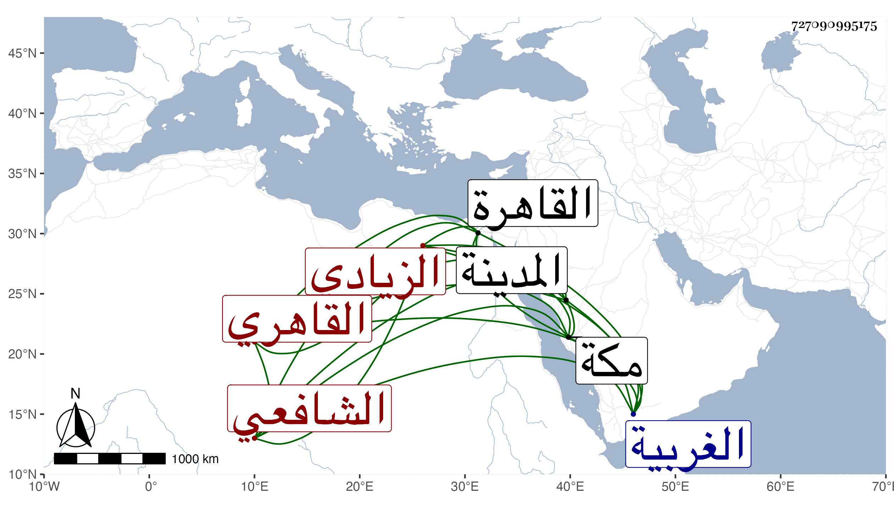

0902Sakhawi.DawLamic.ITO20230111-ara1.EIS1600.727090995175
Biography ID: 727090995175
34
أحمد بن علي بن أحمد الشهاب الزيادي الأصل نسبة لمحلة زياد بالتشديد من الغربية القاهري الشافعي أخو محمد الآتي . ولد سنة ثلاث وأربعين وثمانمائة بالقاهرة ونشأ فحفظ القرآن والعمدة والشاطبية والمنهاج وعرض على جماعة وجود الخط وكتب به أشياء وحضر دروس البكري وغيره وكذا حضر عندي في البرقوقية وغيرها وتنزل في بعض الجهات وقرأ في الجوق وحج وجاور بمكة والمدينة وهو فقير خير متودد .
